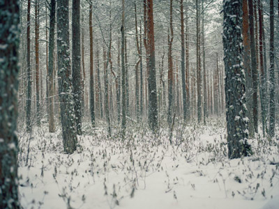

We Weren’t Prepared for Winter Weather
“I think we have to make one more rock hunting trip before winter sets in,” my weekly rockhounding friend, Mike Bruton, suggested last Saturday as we met each other ice fishing on the Henrys Lake. “Weather does not look too bad for Wednesday but even though there may be a little moisture, we can go after that vein of opal that we found in September.”
It would be our 17th trip of the summer into the mountains of central Idaho looking for beautiful and odd stones to make into cabochons for necklaces and other jewelry. Agates, jasper and petrified wood were our usual material that we had been hunting with an occasional trip for opal or crystals.
The day before Thanksgiving we left early enough to join the daily migration of workers to the Idaho National Laboratory and by the time we got to Arco we had avoided playing bumper cars with the bumper-to-bumper traffic. Then as we drove through central Idaho we had another migration to go through. The antelope were crossing the road migrating from the high country to the harvested barren fields.
Ten miles from our destination, snow started falling and we both chuckled because it was about six hours early. But we had the vein GPS’ed and a little snow would not deter us. The snow squall had quit by the time we were at the site but a quarter of an inch of the white covering changed everything and it took us 30 minutes to find the small vein. Even though we had picks and bars, chisels and hammers, we were not prepared for the frozen earth around the rock and the host rock containing the opal was very reluctant to give up the “good stuff.”
Contact Information

123 Weather Eye Lane, Preston, Idaho 83263
(555) 555-5555
info@fakeweathereye.com